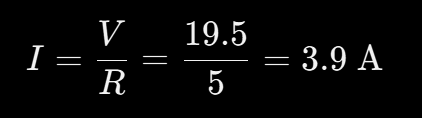

so i am trying to explode a innocent capacitor by putting in a LOT of current through it (more than its current rating) such that it would explode. You can read up on this here. also i feel that it is not a very good idea to search up on too much stuff about it or else they would give me suggestions on "how to escape the watchlist" and stuff...
anyways here is the very nice circuit diagram that i made. you notice that there is so many batteries because i need to blow up the capacitor. (so we need enough voltage).

So lemme explain the parts. i need a fuse otherwise maybe sth bad will happen to the batteries after the capacitor explodes and i definitely dont want that to happen.
Also on the resistor, i put it there such that there wont be too much current through it, so the current surge would only be 3.9A
and yes, i chose to use a fuse (either a 5A or 4A slow fuse) such that the current surge wont cause it to break
When too much current passes through a capacitor, the Dielectric (insulating layer) breaks down Internal electrolyte starts to boil Pressure builds up inside the metal canister Then... üî• KABOOM üî• The cap either: Vents with a loud hiss/pop + smoke Blows its top off ‚Äî sometimes literally launches the rubber seal Shoots flames or burns depending on how much pressure was inside
SO this is my favourite part! The capacitor. I used a 100 micro Farad 16 V rated capacitor cuz it is very small and i actually hope that the capacitor wont blow up VERY violently

Also i asked my dear friend how to blow it up more effectively, so i decided to add more batteries instead, but here are some suggestions it gave me:
Honestly i feel that the capacitor is quite pathetic and wanted to change to a 4700 microfarad capacitor which would give about 1.35J of energy when exploded, and mind you, that’s enough energy to blow the top off, send shrapnel, and scorch the table
We can use the formula
And for a 100 microfarad capacitor, the energy stored in it is
AND FOR THE PROPOSED 4700microfarad, IT WOULD BE
IF WE ONLY PUT 24V!!!!